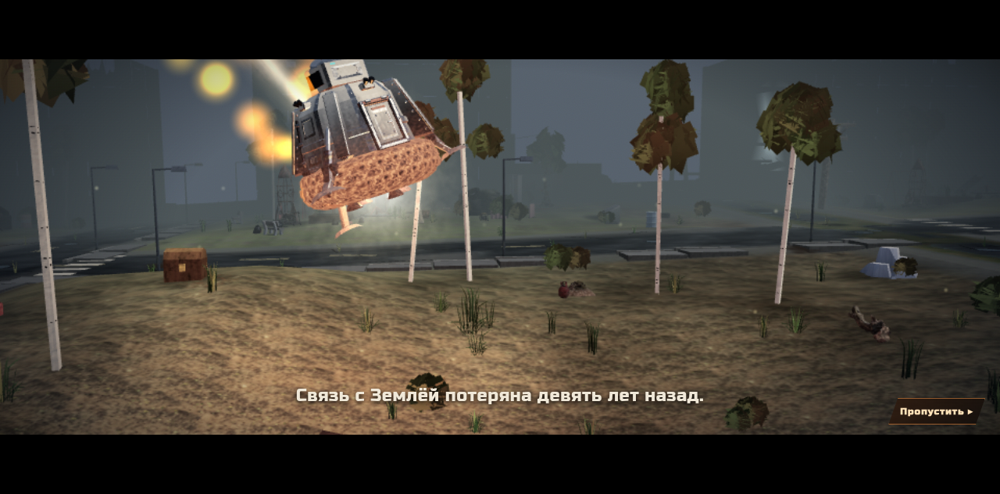
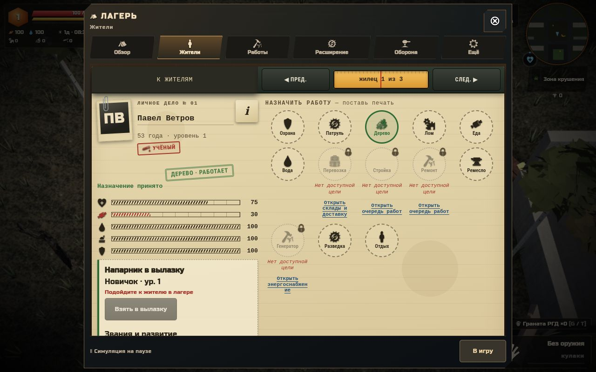
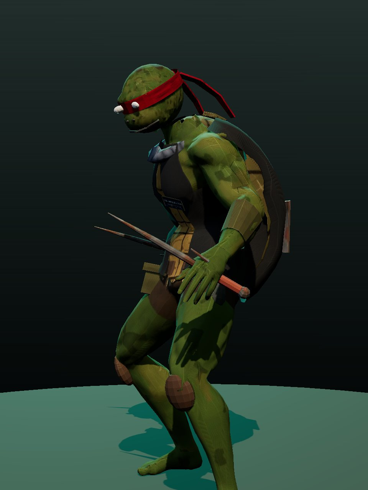
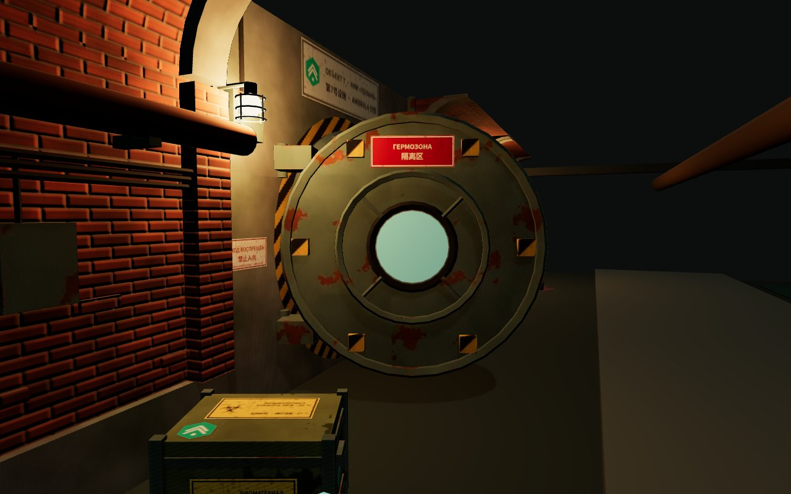
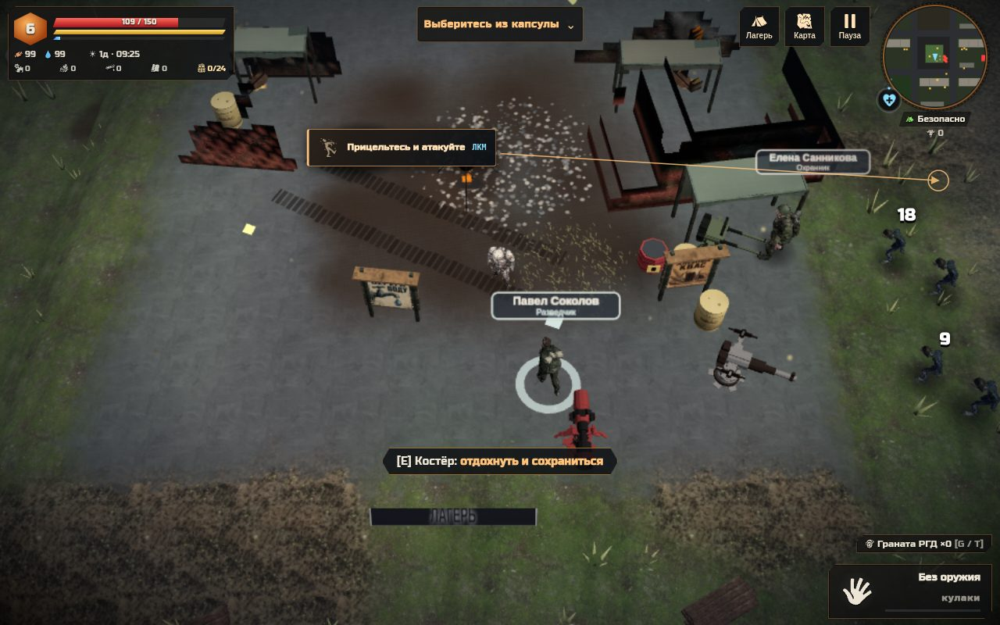

Разведай руины
Собирай припасы, ищи оружие и читай забытые записи. Пять поясов опасности, метро и подземелья делают каждую вылазку выбором между добычей и возвращением.

Россия, 2136 · связь с Землёй потеряна
Вернись. Выживи.
Собери своих.
Девять лет тишины. Возвращение с Марса. Мир, который больше не ждёт спасателей. Теперь всё начинается с тебя.
3D-сурвайвал · RPG · стратегия лагеря
Бесплатно в браузере. ПК и смартфон. Ранний доступ.
01 / Земля после людей
Лес вернул себе улицы. Под землёй остались чужие следы. Среди руин ещё есть люди — и место для лагеря, который ты построишь вместе с ними.
Собирай припасы, ищи оружие и читай забытые записи. Пять поясов опасности, метро и подземелья делают каждую вылазку выбором между добычей и возвращением.
У каждого выжившего свои навыки и состояние. Назначай работы, развивай хозяйство и налаживай снабжение. Турелям нужны патроны, а людям — твои решения.
Ближнее оружие, огнестрел, редкая экипировка и навыки. Выбирай позицию, замечай подготовку атаки и используй короткое окно для ответного удара.
ЗАПИСЬ ИЗ ЖУРНАЛА«Мы вернулись домой. Осталось понять, что теперь значит это слово».

Люди важнее запасов
Личные дела жителей, заметные состояния, назначения и чертежи построек собраны в штабном столе. На телефоне ключевые команды остаются под рукой.
Спарка ПКМ, гвоздомёт и огнемёт защищают периметр. Подносчики доставляют боеприпасы — оборона начинается ещё до первого выстрела.

Под городом — другой мир
Семь соединённых секторов Южного коллектора. Насосы, затопленные проходы и собственная схема подземелья. В нижней камере тебя ждёт Рафаэль — последний из зелёного клана.
За короткой встречей начинается бой. Уходи с линии рывка, лови момент для атаки. Победителю достанутся именованные парные саи.
Досье коллектора →

03 / Перед выходом
Запускай в браузере или забирай самостоятельный офлайн-файл. Установщик и аккаунт не нужны.
Chrome или Edge с поддержкой WebGL.
Первая загрузка — десятки мегабайт. На слабом устройстве начни с низкого качества графики.
Проект в раннем доступе: мир, баланс и интерфейс продолжают меняться.
На ПК: WASD — движение, мышь — прицел, ЛКМ — атака, E — действие, M — карта, Esc — пауза.
На смартфоне — два стика и кнопки действий. Поддерживаются портретная и альбомная ориентации.
Скачай terra.html из последнего релиза и открой в Chrome. Это отдельная сборка со встроенными ресурсами. Для кооператива нужен интернет.
В хранилище твоего браузера. Перед обновлением или сменой устройства экспортируй сохранение в JSON через меню игры. Сохранение с новым снаряжением требует версии, которая его поддерживает.
Есть прототип кооператива через меню «Связь». Подземелья и метро пока доступны только в одиночной игре. Развитие совместного режима продолжается.
Сообщи об ошибке: укажи устройство, браузер и действия перед ней. Предложения по миру и механикам можно оставить в разделе идей.
Журнал разработки, исходники дополнений и новые выпуски — в репозитории.